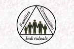

| teaching |
| home page |
| The Student Resource Center is an online community dedicated to aiding students in their educational endeavors. Much like the Student Affairs and Academic Support centers on your campus, this community will assist you in your success as a student and address your needs and concerns in many non-academic areas. The center strives to provide the best of the best online resources, activities, and experiences to support distance and campus based students. If you are interested in finding online resources to help you in your studies, visit our academic subject communities. . |
| Continuing Legal Education West LegalEdcenter CLE, Elim. Lawyer Marketing Advertising, Consultants, Strategies . US Federal Resources Executive, Legislative, Judicial . Reference Resources Library, Dictionary, Directories . Legal Organizations Nat'l Bars, State Bars, Local Bars . |
|  |